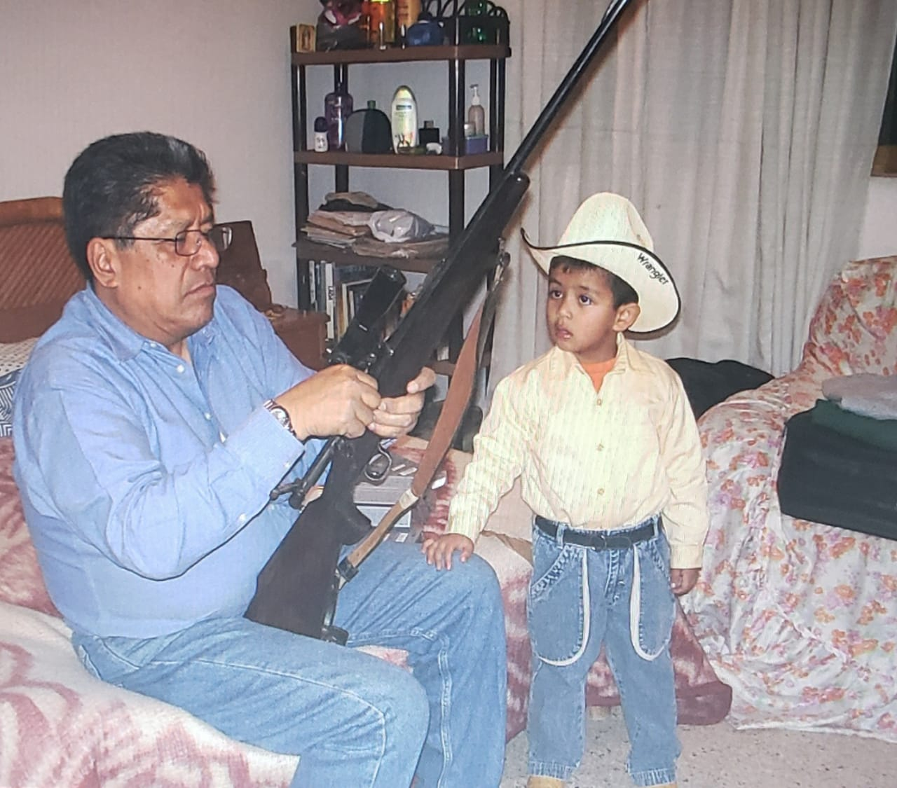

Juan Fernando Herrera Corzas
Summary
Experience in identifying and analyzing bottlenecks in manufacturing processes.
Knowledge of reorganizing the layout of a production plant to increase safety and efficiency.
Experience in developing strategies to reduce costs in a manufacturing company.
Education
- High school: Instituto Educativo Xalapeño 2014-2017
- Preparatory school: Instituto Villa de Cotrés 2017-2020
- University: Universidad de las Américas Puebla 2020-present
Work Experience
- Plant Layout Design at ABC Manufacturing Company: September 2018 - March 2019.
- Development of Cost Strategies at XYZ Industries: Date: May 2017 - August 2018.
- Logistics Project Management at DEF Logistics Solutions: Date: January 2016 - April 2017.
Social Network

More information